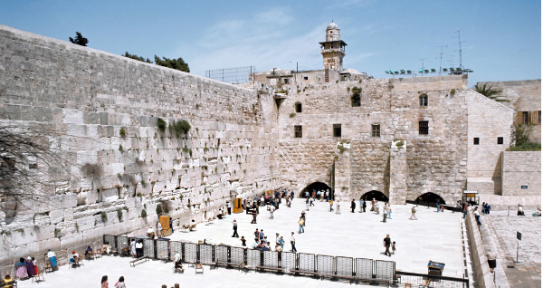

Israel’s Secret Negotiations to Raise the Jordanian Flag Over the Temple Mount
It may be asked: what difference does it make which flag flies there? It is irrelevant, does not bother anyone, and has no halachic problem. But the public is not grasping how frightful such a step is. Some years ago it was absolutely untenable that Jerusalem be ruled by several governments. It was further ruled out that Jerusalem be given the status of ex-territorial. Now a gentile has the audacity to state that he has total rights over Hebron, Sh’chem, and the Old City of Jerusalem. And more: he demands that the Holy of Holies be handed over to him, the Foundation Rock (of the Creation), and that he be given the rights to raise there the Jordanian flag!
Translated by Rabbi Binyomin Schlanger

A FRIGHTFUL STEP
We are now in a situation of “Nations gather and regimes talk [against the Jewish People, but their efforts will end] in vain” (Psalms 2:1). Not that this gathering is G-d forbid a threat to Jewish lives. The gathering is nevertheless against G-d and His anointed Nation. The Arabs demand that they be given the sacred spot of the Holy of Holies, rights over the Temple Mount and the permit to raise the flag of Jordan there. The Government of Israel [in their willingness to concede] wanted to keep this [agreement] secret.
But in reality it is already days and weeks that this has been known to Washington, the Arab Nations, and also to those who are pained by their lack of Jewish pride. They attempt to justify this step by saying this will prevent danger to life, with all their excuses. Yet in the meantime their negotiations continue together with the shocking fact that Jews are prepared to relinquish into their hands this most sacred spot to the extent of giving the permit to raise the flag of Jordan! Continuously we have stormed to prevent them from internationalizing the Old City of Jerusalem to become a city of three ruling governments. But they have reached a far lower state.
It may be asked: what difference does it make which flag flies there? It is irrelevant, does not bother anyone, and has no halachic problem. But the public is not grasping how frightful such a step is. Some years ago it was absolutely untenable that Jerusalem be ruled by several governments. It was further ruled out that Jerusalem be given the status of ex-territorial. Now a gentile has the audacity to state that he has total rights over Hebron, Sh’chem, and the Old City of Jerusalem. And more: he demands that the Holy of Holies be handed over to him, the Foundation Rock (of the Creation), and that he be given the rights to raise there the Jordanian flag!
They (the government of Israel) explain that this will prevent bloodshed, and one Jew is an entire world. The truth must be told – there is no link between the two.
The Talmud lays down the ruling that the Jewish people are the fiercest amongst the nations. “G-d gives strength to His People; G-d blesses His People with peace” (Psalms 29:11). The Midrash states (Song of Songs 2): “There is no strength other than Torah.” When the Jewish People hold on to the Torah, they will survive. G-d will simply grant His People fortitude, and G-d will bless His People with peace. The Midrash (Yalkut Shimoni, Torah 267) relates that not only do Jewish people know of this fact, but the entire world community has heard that G-d gives His strength to His People and G-d will grant His People peace.
(From a farbrengen first day Rosh Chodesh Iyar 1976)
THE SIXTH K’NESSIA HA’G’DOLA
The Rebbe spoke a sicha (which was published in our last column) several days after the Sixth World Conference of Rabbis (Moetzes G’dolei HaTorah) during the course of which nothing was spoken of the threat to Jewish safety in Israel. The Rebbe had sent the following letter, but due to pressure from some internal factions it was never read out.
Last days of Chanukah 1980… regarding a matter of immediate urgency, all necessary publicity should be given to the decision of the Council of Torah Leaders of the K’nessia HaGedola of Elul 5697: “The Holy Land for which G-d has set out her borders in the Holy Torah is given to the Nation of Israel, the Eternal Nation, and that any surrender of the Holy Land given to us by G-d has no substance whatsoever.”
Here arises the question: If the [dangerous] results [of Rabbis instructing that portions of the Land of Israel maybe relinquished] are so clear, how in fact do they permit this in writing?
The sole point in their favor can be explained as follows. There is an explanation why Rabbi Israel Baal Shem Tov (founder of the Chassidic movement) was named Israel. Chassidic writings explain that when a man is in a faint and medical treatment no longer helps, there remains the advice that one should whisper into his ear his [Hebrew] name. This name is connected to the very essence of his soul, to the point which is beyond the revealed powers of the soul, and this is able to awaken him. Up until the generation of the Baal Shem Tov the spiritual standing of the Jewish people had not yet reached this point of unconsciousness. That is why they still had a sense of feeling and could bear the pain of the spiritual descent. The Talmud [Shabbos 112B] states that earlier generations were like angels followed by later generations like men. Now we have reached the final generation [since the times of the Baal Shem Tov] when the Jewish people have fallen into unconsciousness. That is why the Baal Shem Tov, whose name is Israel, was sent down from above. This revelation was of a sort of calling out of the name of the Jewish people to awaken them from their spiritual faint.
Herein lies the point of favor one can offer them some merit. They are the last remaining Jews who are still in the state of spiritual unconsciousness. G-d foresaw that if they were to experience the great pain they would not be able to bear it. Therefore did He put them into this state and are thereby able to put into writing such shocking conclusions!
This is specially and specifically so, because ever since that time the situation has increased in severity to the very foundations, and any surrender is a matter of actual threat to Jewish Life. This is halachically defined (Shulchan Aruch Or HaChayim, laws of Shabbos 329), [G-d have mercy upon us], that the land will be easily conquered. May G-d, who protects His Jewish Nation, protect every single one, both in Israel and abroad. Very speedily in our days may He put an end to the darkness and redoubled darkness of the generation of the footsteps of Moshiach, who will redeem us from our bitter exile. For he will fight the wars of G-d and vanquish our oppressors, build the Temple in its place, gather in the dispersed ones of Israel, and the entire world will be filled with the knowledge of G-d.
Dear reader,
Please take a few moments to copy, paste, and email this sicha to 10 friends, asking your friends in turn to email the same to 10 further friends, ad infinitum. Thereby you will be taking a strong and active part in the Rebbe’s battle to protect the lives of millions of Jewish people whose lives are so endangered. This is, as the Rambam writes, Milchemes Hashem, and we will see it through to the final Nitzachon!
Please go to http://beismoshiachmagazine.org/true-peace/ where you will find the current sicha.
The Rebbe. "Israel’s Secret Negotiations to Raise the Jordanian Flag Over the Temple Mount." Beis Moshiach (March 13, 2013).